Graphs of Linear Functions
Two competing telephone companies offer different payment plans. The two plans charge the same rate per long distance minute, but charge a different monthly flat fee. A consumer wants to determine whether the two plans will ever cost the same amount for a given number of long distance minutes used. The total cost of each payment plan can be represented by a linear function. To solve the problem, we will need to compare the functions. In this section, we will consider methods of comparing functions using graphs.
Graphing Linear Functions
In Linear Functions, we saw that that the graph of a linear function is a straight line. We were also able to see the points of the function as well as the initial value from a graph. By graphing two functions, then, we can more easily compare their characteristics.
There are three basic methods of graphing linear functions. The first is by plotting points and then drawing a line through the points. The second is by using the y-intercept and slope. And the third is by using transformations of the identity function
Graphing a Function by Plotting Points
To find points of a function, we can choose input values, evaluate the function at these input values, and calculate output values. The input values and corresponding output values form coordinate pairs. We then plot the coordinate pairs on a grid. In general, we should evaluate the function at a minimum of two inputs in order to find at least two points on the graph. For example, given the function, we might use the input values 1 and 2. Evaluating the function for an input value of 1 yields an output value of 2, which is represented by the point Evaluating the function for an input value of 2 yields an output value of 4, which is represented by the point Choosing three points is often advisable because if all three points do not fall on the same line, we know we made an error.
Graphing by Plotting Points
Graph by plotting points.
Solution
Begin by choosing input values. This function includes a fraction with a denominator of 3, so let’s choose multiples of 3 as input values. We will choose 0, 3, and 6.
Evaluate the function at each input value, and use the output value to identify coordinate pairs.
Plot the coordinate pairs and draw a line through the points. Figure 1 represents the graph of the function
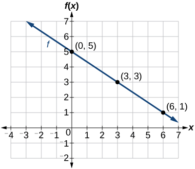
Graphing a Function Using y-intercept and Slope
Another way to graph linear functions is by using specific characteristics of the function rather than plotting points. The first characteristic is its y-intercept, which is the point at which the input value is zero. To find the y-intercept, we can set in the equation.
The other characteristic of the linear function is its slope which is a measure of its steepness. Recall that the slope is the rate of change of the function. The slope of a function is equal to the ratio of the change in outputs to the change in inputs. Another way to think about the slope is by dividing the vertical difference, or rise, by the horizontal difference, or run. We encountered both the y-intercept and the slope in Linear Functions.
Let’s consider the following function.
The slope is Because the slope is positive, we know the graph will slant upward from left to right. The y-intercept is the point on the graph when The graph crosses the y-axis at Now we know the slope and the y-intercept. We can begin graphing by plotting the point We know that the slope is rise over run, From our example, we have which means that the rise is 1 and the run is 2. So starting from our y-intercept we can rise 1 and then run 2, or run 2 and then rise 1. We repeat until we have a few points, and then we draw a line through the points as shown in Figure 2.
![A graph on a coordinate plane shows a line labeled f. The y-axis ranges from 0 to 5 and the x-axis from -2 to 7. The line passes through the point (0,1), which is labeled as the y-intercept. A dashed red triangle illustrates the slope: moving from left to right, for every 'Run = 2' units horizontally, the line goes up 'Rise = 1' unit vertically. This pattern is shown from (0,1) to (2,2), from (2,2) to (4,3), and from (4,3) to (6,4). The line extends indefinitely in both directions as indicated by arrows.](../../media/CNX_Precalc_Figure_02_02_003.jpg)
Graphing by Using the y-intercept and Slope
Graph using the y-intercept and slope.
Solution
Evaluate the function at to find the y-intercept. The output value when is 5, so the graph will cross the y-axis at
According to the equation for the function, the slope of the line is This tells us that for each vertical decrease in the “rise” of units, the “run” increases by 3 units in the horizontal direction. We can now graph the function by first plotting the y-intercept on the graph in Figure 3. From the initial value we move down 2 units and to the right 3 units. We can extend the line to the left and right by repeating, and then draw a line through the points.
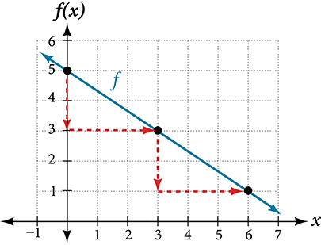
Analysis
The graph slants downward from left to right, which means it has a negative slope as expected.
Graphing a Function Using Transformations
Another option for graphing is to use transformations of the identity function . A function may be transformed by a shift up, down, left, or right. A function may also be transformed using a reflection, stretch, or compression.
Vertical Stretch or Compression
In the equation the is acting as the vertical stretch or compression of the identity function. When is negative, there is also a vertical reflection of the graph. Notice in Figure 4 that multiplying the equation of by stretches the graph of by a factor of units if and compresses the graph of by a factor of units if This means the larger the absolute value of the steeper the slope.
![A graph displays eight different linear functions plotted on a Cartesian coordinate system. All lines pass through the origin (0,0). The functions include f(x) = 3x (brown), f(x) = 2x (dark blue), f(x) = x (purple), f(x) = 1/2x (orange), f(x) = 1/3x (green), f(x) = -1/2x (light blue), f(x) = -x (dark purple), and f(x) = -2x (red). The x-axis and y-axis both range from -6 to 6, with grid lines indicating integer values. Each function is color-coded and its equation is listed in corresponding colors to the right of the graph.](../../media/CNX_Precalc_Figure_02_02_005.jpg)
Vertical Shift
In the acts as the vertical shift, moving the graph up and down without affecting the slope of the line. Notice in Figure 5 that adding a value of to the equation of shifts the graph of a total of units up if is positive and units down if is negative.
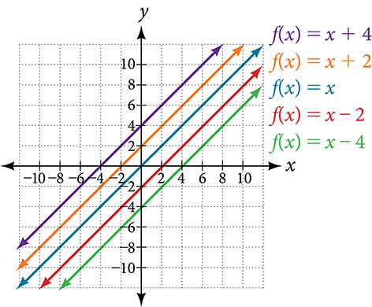
Using vertical stretches or compressions along with vertical shifts is another way to look at identifying different types of linear functions. Although this may not be the easiest way to graph this type of function, it is still important to practice each method.
Graphing by Using Transformations
Graph using transformations.
Solution
The equation for the function shows that so the identity function is vertically compressed by The equation for the function also shows that so the identity function is vertically shifted down 3 units. First, graph the identity function, and show the vertical compression as in Figure 6.

Then show the vertical shift as in Figure 7.
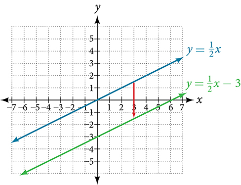
Writing the Equation for a Function from the Graph of a Line
Recall that in Linear Functions, we wrote the equation for a linear function from a graph. Now we can extend what we know about graphing linear functions to analyze graphs a little more closely. Begin by taking a look at Figure 8. We can see right away that the graph crosses the y-axis at the point so this is the y-intercept.
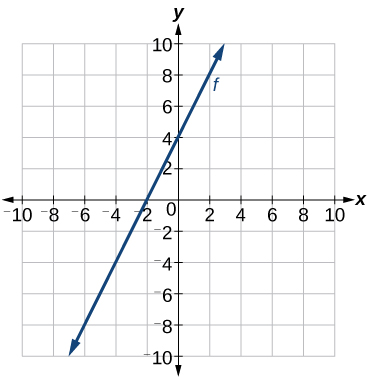
Then we can calculate the slope by finding the rise and run. We can choose any two points, but let’s look at the point To get from this point to the y-intercept, we must move up 4 units (rise) and to the right 2 units (run). So the slope must be
Substituting the slope and y-intercept into the slope-intercept form of a line gives
Matching Linear Functions to Their Graphs
Match each equation of the linear functions with one of the lines in Figure 9.
- ⓐ
- ⓑ
- ⓒ
- ⓓ
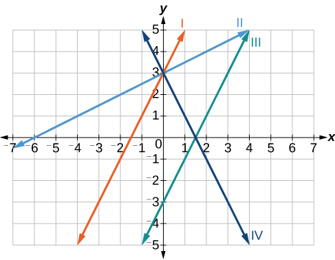
Solution
Analyze the information for each function.
- ⓐ This function has a slope of 2 and a y-intercept of 3. It must pass through the point (0, 3) and slant upward from left to right. We can use two points to find the slope, or we can compare it with the other functions listed. Function has the same slope, but a different y-intercept. Lines I and III have the same slant because they have the same slope. Line III does not pass through so must be represented by Line I.
- ⓑ This function also has a slope of 2, but a y-intercept of It must pass through the point and slant upward from left to right. It must be represented by Line III.
- ⓒ This function has a slope of –2 and a y-intercept of 3. This is the only function listed with a negative slope, so it must be represented by line IV because it slants downward from left to right.
- ⓓ This function has a slope of and a y-intercept of 3. It must pass through the point (0, 3) and slant upward from left to right. Lines I and II pass through but the slope of is less than the slope of so the line for must be flatter. This function is represented by Line II.
Now we can re-label the lines as in Figure 10.
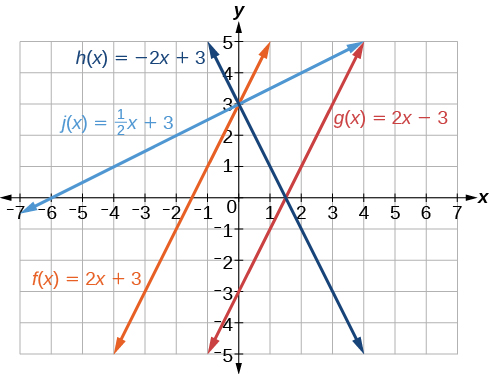
Finding the x-intercept of a Line
So far, we have been finding the y-intercepts of a function: the point at which the graph of the function crosses the y-axis. A function may also have an x-intercept, which is the x-coordinate of the point where the graph of the function crosses the x-axis. In other words, it is the input value when the output value is zero.
To find the x-intercept, set a function equal to zero and solve for the value of For example, consider the function shown.
Set the function equal to 0 and solve for
The graph of the function crosses the x-axis at the point
Finding an x-intercept
Find the x-intercept of
Solution
Set the function equal to zero to solve for
The graph crosses the x-axis at the point
Analysis
A graph of the function is shown in Figure 12. We can see that the x-intercept is as we expected.
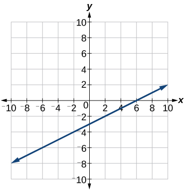
Describing Horizontal and Vertical Lines
There are two special cases of lines on a graph—horizontal and vertical lines. A horizontal line indicates a constant output, or y-value. In Figure 13, we see that the output has a value of 2 for every input value. The change in outputs between any two points, therefore, is 0. In the slope formula, the numerator is 0, so the slope is 0. If we use in the equation the equation simplifies to In other words, the value of the function is a constant. This graph represents the function

A vertical line indicates a constant input, or x-value. We can see that the input value for every point on the line is 2, but the output value varies. Because this input value is mapped to more than one output value, a vertical line does not represent a function. Notice that between any two points, the change in the input values is zero. In the slope formula, the denominator will be zero, so the slope of a vertical line is undefined.
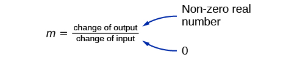
Notice that a vertical line, such as the one in Figure 14, has an x-intercept, but no y-intercept unless it’s the line This graph represents the line
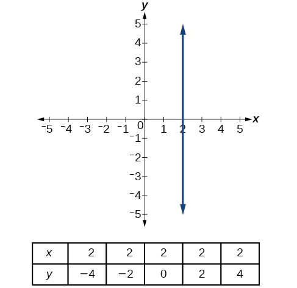
Writing the Equation of a Horizontal Line
Write the equation of the line graphed in Figure 15.
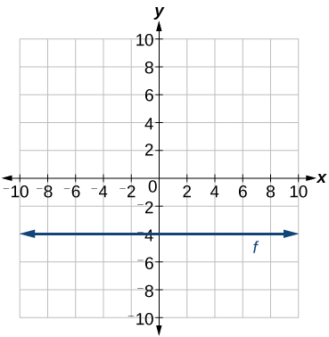
Solution
For any x-value, the y-value is so the equation is
Writing the Equation of a Vertical Line
Write the equation of the line graphed in Figure 16.
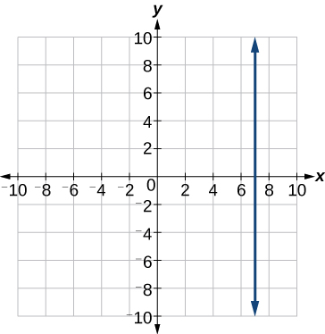
Solution
The constant x-value is so the equation is
Determining Whether Lines are Parallel or Perpendicular
The two lines in Figure 17 are parallel lines: they will never intersect. Notice that they have exactly the same steepness, which means their slopes are identical. The only difference between the two lines is the y-intercept. If we shifted one line vertically toward the y-intercept of the other, they would become the same line.
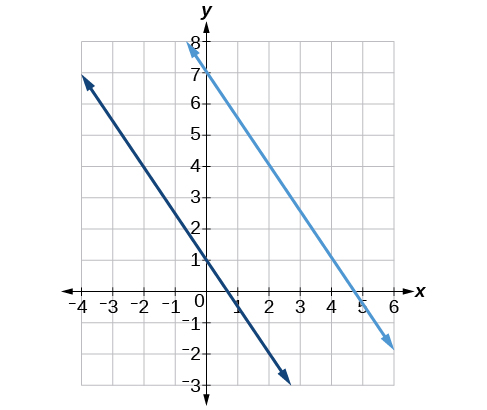
We can determine from their equations whether two lines are parallel by comparing their slopes. If the slopes are the same and the y-intercepts are different, the lines are parallel. If the slopes are different, the lines are not parallel.
Unlike parallel lines, perpendicular lines do intersect. Their intersection forms a right, or 90-degree, angle. The two lines in Figure 18 are perpendicular.
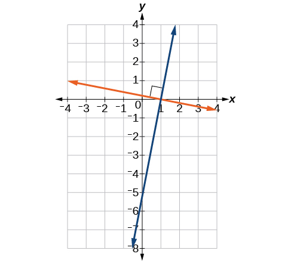
Perpendicular lines do not have the same slope. The slopes of perpendicular lines are different from one another in a specific way. The slope of one line is the negative reciprocal of the slope of the other line. The product of a number and its reciprocal is 1. So, if and are negative reciprocals of one another, they can be multiplied together to yield –1.
To find the reciprocal of a number, divide 1 by the number. So the reciprocal of 8 is and the reciprocal of is 8. To find the negative reciprocal, first find the reciprocal and then change the sign.
As with parallel lines, we can determine whether two lines are perpendicular by comparing their slopes, assuming that the lines are neither horizontal nor vertical. The slope of each line below is the negative reciprocal of the other so the lines are perpendicular.
The product of the slopes is –1.
Identifying Parallel and Perpendicular Lines
Given the functions below, identify the functions whose graphs are a pair of parallel lines and a pair of perpendicular lines.
Solution
Parallel lines have the same slope. Because the functions and each have a slope of 2, they represent parallel lines. Perpendicular lines have negative reciprocal slopes. Because −2 and are negative reciprocals, the equations, and represent perpendicular lines.
Analysis
A graph of the lines is shown in Figure 19.
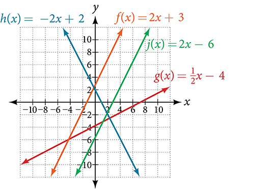
The graph shows that the lines and are parallel, and the lines and are perpendicular.
Writing the Equation of a Line Parallel or Perpendicular to a Given Line
If we know the equation of a line, we can use what we know about slope to write the equation of a line that is either parallel or perpendicular to the given line.
Writing Equations of Parallel Lines
Suppose for example, we are given the following equation.
We know that the slope of the line formed by the function is 3. We also know that the y-intercept is Any other line with a slope of 3 will be parallel to So the lines formed by all of the following functions will be parallel to
Suppose then we want to write the equation of a line that is parallel to and passes through the point We already know that the slope is 3. We just need to determine which value for will give the correct line. We can begin with the point-slope form of an equation for a line, and then rewrite it in the slope-intercept form.
So is parallel to and passes through the point
Finding a Line Parallel to a Given Line
Find a line parallel to the graph of that passes through the point
Solution
The slope of the given line is 3. If we choose the slope-intercept form, we can substitute and into the slope-intercept form to find the y-intercept.
The line parallel to that passes through is
Analysis
We can confirm that the two lines are parallel by graphing them. Figure 20 shows that the two lines will never intersect.
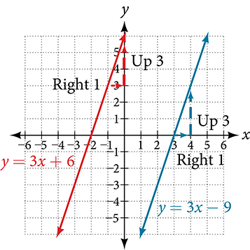
Writing Equations of Perpendicular Lines
We can use a very similar process to write the equation for a line perpendicular to a given line. Instead of using the same slope, however, we use the negative reciprocal of the given slope. Suppose we are given the following function:
The slope of the line is 2, and its negative reciprocal is Any function with a slope of will be perpendicular to So the lines formed by all of the following functions will be perpendicular to
As before, we can narrow down our choices for a particular perpendicular line if we know that it passes through a given point. Suppose then we want to write the equation of a line that is perpendicular to and passes through the point We already know that the slope is Now we can use the point to find the y-intercept by substituting the given values into the slope-intercept form of a line and solving for
The equation for the function with a slope of and a y-intercept of 2 is
So is perpendicular to and passes through the point Be aware that perpendicular lines may not look obviously perpendicular on a graphing calculator unless we use the square zoom feature.
Finding the Equation of a Perpendicular Line
Find the equation of a line perpendicular to that passes through the point
Solution
The original line has slope so the slope of the perpendicular line will be its negative reciprocal, or Using this slope and the given point, we can find the equation for the line.
The line perpendicular to that passes through is
Finding the Equation of a Line Perpendicular to a Given Line Passing through a Point
A line passes through the points and Find the equation of a perpendicular line that passes through the point
Solution
From the two points of the given line, we can calculate the slope of that line.
Find the negative reciprocal of the slope.
We can then solve for the y-intercept of the line passing through the point
The equation for the line that is perpendicular to the line passing through the two given points and also passes through point is
Solving a System of Linear Equations Using a Graph
A system of linear equations includes two or more linear equations. The graphs of two lines will intersect at a single point if they are not parallel. Two parallel lines can also intersect if they are coincident, which means they are the same line and they intersect at every point. For two lines that are not parallel, the single point of intersection will satisfy both equations and therefore represent the solution to the system.
To find this point when the equations are given as functions, we can solve for an input value so that In other words, we can set the formulas for the lines equal to one another, and solve for the input that satisfies the equation.
Finding a Point of Intersection Algebraically
Find the point of intersection of the lines and
Solution
Set
This tells us the lines intersect when the input is
We can then find the output value of the intersection point by evaluating either function at this input.
These lines intersect at the point
Finding a Break-Even Point
A company sells sports helmets. The company incurs a one-time fixed cost for $250,000. Each helmet costs $120 to produce, and sells for $140.
- ⓐ Find the cost function, to produce helmets, in dollars.
- ⓑ Find the revenue function, from the sales of helmets, in dollars.
- ⓒ Find the break-even point, the point of intersection of the two graphs and
Solution
- ⓐ The cost function is the sum of the fixed cost, $250,000, and the variable cost, $120 per helmet.
- ⓑ The revenue function is the total revenue from the sale of helmets,
- ⓒ The break-even point is the point of intersection of the graph of the cost and revenue functions. To find the x-coordinate of the coordinate pair of the point of intersection, set the two equations equal, and solve for
To find evaluate either the revenue or the cost function at 12,500.
The break-even point is
Analysis
This means if the company sells 12,500 helmets, they break even; both the sales and cost incurred equaled 1.75 million dollars. See Figure 23
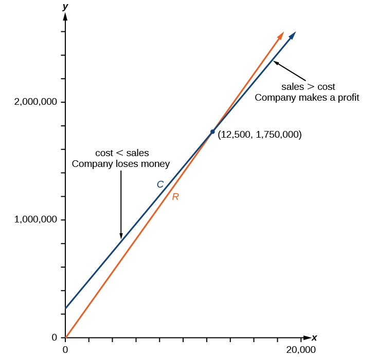
Key Concepts
- Linear functions may be graphed by plotting points or by using the y-intercept and slope. See Example 1 and Example 2.
- Graphs of linear functions may be transformed by using shifts up, down, left, or right, as well as through stretches, compressions, and reflections. See Example 3.
- The y-intercept and slope of a line may be used to write the equation of a line.
- The x-intercept is the point at which the graph of a linear function crosses the x-axis. See Example 4 and Example 5.
- Horizontal lines are written in the form, See Example 6.
- Vertical lines are written in the form, See Example 7.
- Parallel lines have the same slope.
- Perpendicular lines have negative reciprocal slopes, assuming neither is vertical. See Example 8.
- A line parallel to another line, passing through a given point, may be found by substituting the slope value of the line and the x- and y-values of the given point into the equation, and using the that results. Similarly, the point-slope form of an equation can also be used. See Example 9.
- A line perpendicular to another line, passing through a given point, may be found in the same manner, with the exception of using the negative reciprocal slope. See Example 10 and Example 11.
- A system of linear equations may be solved setting the two equations equal to one another and solving for The y-value may be found by evaluating either one of the original equations using this x-value.
- A system of linear equations may also be solved by finding the point of intersection on a graph. See Example 12 and Example 13.
Section Exercises
Verbal
If the graphs of two linear functions are parallel, describe the relationship between the slopes and the y-intercepts.
Solution
The slopes are equal; y-intercepts are not equal.
If the graphs of two linear functions are perpendicular, describe the relationship between the slopes and the y-intercepts.
If a horizontal line has the equation and a vertical line has the equation what is the point of intersection? Explain why what you found is the point of intersection.
Solution
The point of intersection is This is because for the horizontal line, all of the coordinates are and for the vertical line, all of the coordinates are The point of intersection will have these two characteristics.
Explain how to find a line parallel to a linear function that passes through a given point.
Explain how to find a line perpendicular to a linear function that passes through a given point.
Solution
First, find the slope of the linear function. Then take the negative reciprocal of the slope; this is the slope of the perpendicular line. Substitute the slope of the perpendicular line and the coordinate of the given point into the equation and solve for Then write the equation of the line in the form by substituting in and
Algebraic
For the following exercises, determine whether the lines given by the equations below are parallel, perpendicular, or neither parallel nor perpendicular:
Solution
neither parallel or perpendicular
Solution
perpendicular
Solution
parallel
For the following exercises, find the x- and y-intercepts of each equation
Solution
;
Solution
;
Solution
;
For the following exercises, use the descriptions of each pair of lines given below to find the slopes of Line 1 and Line 2. Is each pair of lines parallel, perpendicular, or neither?
- Line 1: Passes through and
- Line 2: Passes through and
- Line 1: Passes through and
- Line 2: Passes through and
Solution
- Line 1: Passes through and
- Line 2: Passes through and
- Line 1: Passes through and
- Line 2: Passes through and
Solution
- Line 1: Passes through and
- Line 2: Passes through and
- Line 1: Passes through and
- Line 2: Passes through and
Solution
Write an equation for a line parallel to and passing through the point
Write an equation for a line parallel to and passing through the point
Solution
Write an equation for a line perpendicular to and passing through the point
Write an equation for a line perpendicular to and passing through the point
Solution
Find the point at which the line intersects the line
Find the point at which the line intersects the line
Solution
Use algebra to find the point at which the line intersects the line
Use algebra to find the point at which the line intersects the line
Solution
Graphical
For the following exercises, match the given linear equation with its graph in Figure 24.
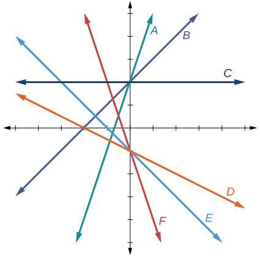
Solution
F
Solution
C
Solution
A
For the following exercises, sketch a line with the given features.
An x-intercept of and y-intercept of
An x-intercept of and y-intercept of
Solution
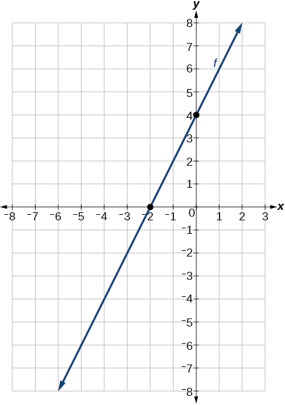
A y-intercept of and slope
A y-intercept of and slope
Solution
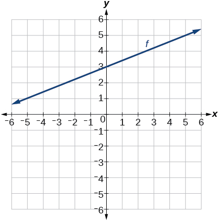
Passing through the points and
Passing through the points and
Solution
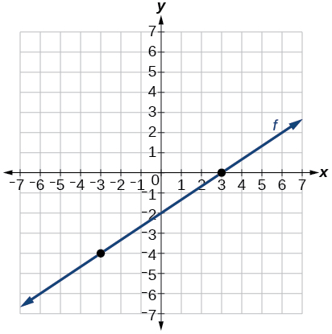
For the following exercises, sketch the graph of each equation.
Solution
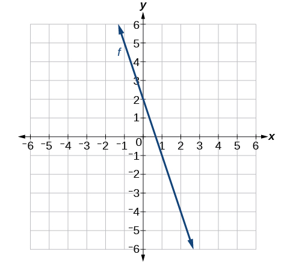
Solution
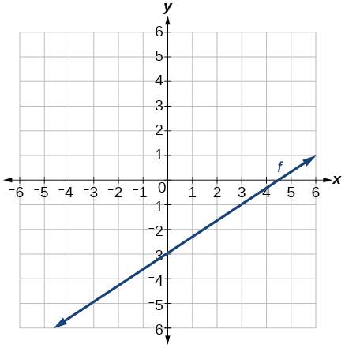
Solution
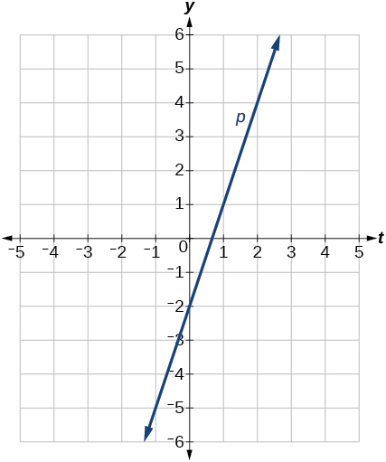
Solution
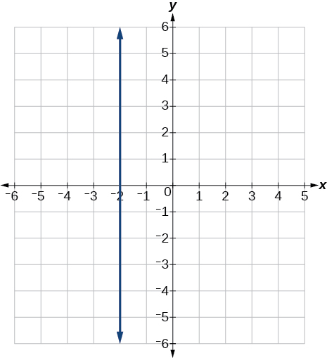
Solution
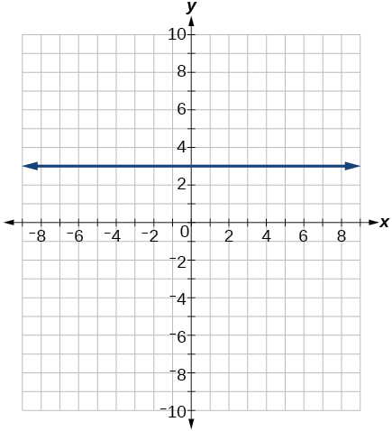
Solution
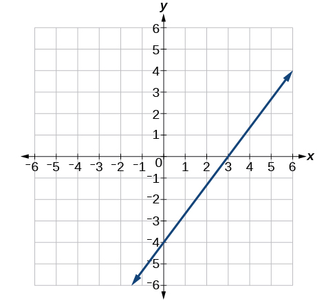
Solution
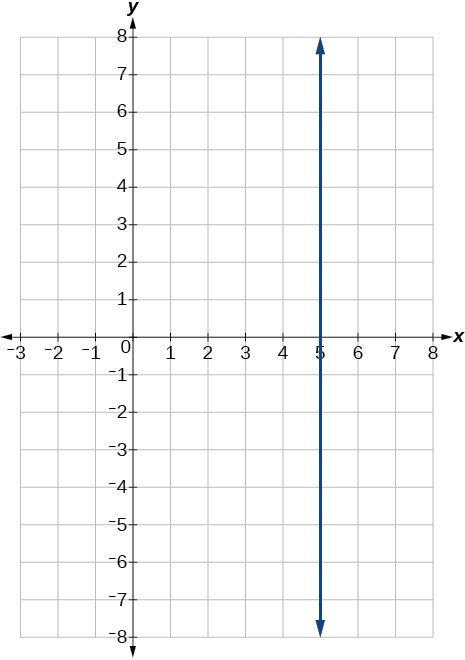
If is the transformation of after a vertical compression by a shift right by 2, and a shift down by 4
- ⓐ Write an equation for
- ⓑ What is the slope of this line?
- ⓒ Find the y-intercept of this line.
Solution
- ⓐ
- ⓑ 0.75
- ⓒ
If is the transformation of after a vertical compression by a shift left by 1, and a shift up by 3
- ⓐ Write an equation for
- ⓑ What is the slope of this line?
- ⓒ Find the y-intercept of this line.
For the following exercises,, write the equation of the line shown in the graph.
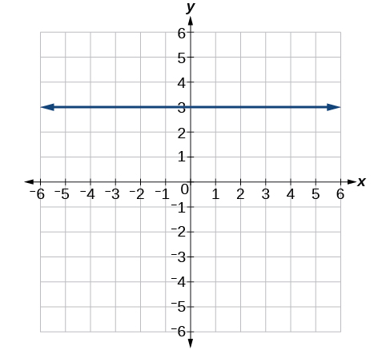
Solution
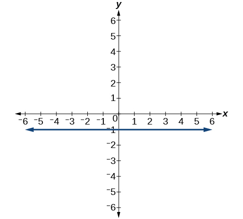
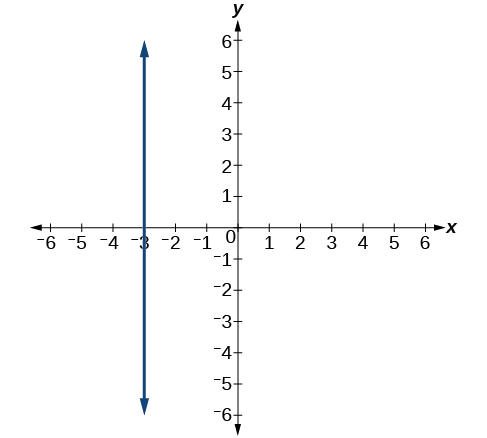
Solution
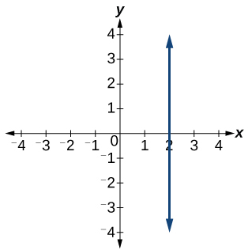
For the following exercises, find the point of intersection of each pair of lines if it exists. If it does not exist, indicate that there is no point of intersection.
Solution
no point of intersection
Solution
Solution
Extensions
Find the equation of the line parallel to the line through the point
Find the equation of the line perpendicular to the line through the point
Solution
For the following exercises, use the functions
Find the point of intersection of the lines and
Where is greater than Where is greater than
Solution
Real-World Applications
- Plan A: $30 per day and $0.18 per mile
- Plan B: $50 per day with free unlimited mileage
How many miles would you need to drive for plan B to save you money?
- Plan A: $20 per month and $1 for every one hundred texts.
- Plan B: $50 per month with free unlimited texts.
How many texts would you need to send per month for plan B to save you money?
Solution
Less than 3000 texts
- Plan A: $15 per month and $2 for every 300 texts.
- Plan B: $25 per month and $0.50 for every 100 texts.
How many texts would you need to send per month for plan B to save you money?
Analysis
The graph of the function is a line as expected for a linear function. In addition, the graph has a downward slant, which indicates a negative slope. This is also expected from the negative constant rate of change in the equation for the function.